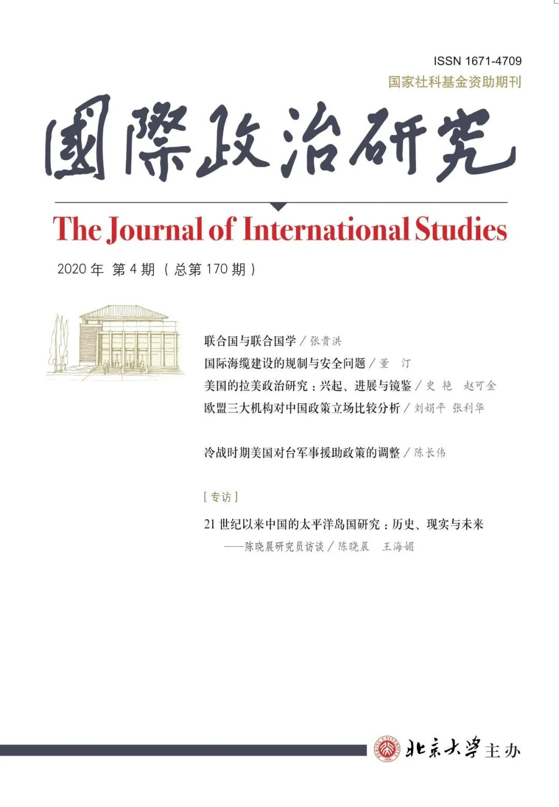
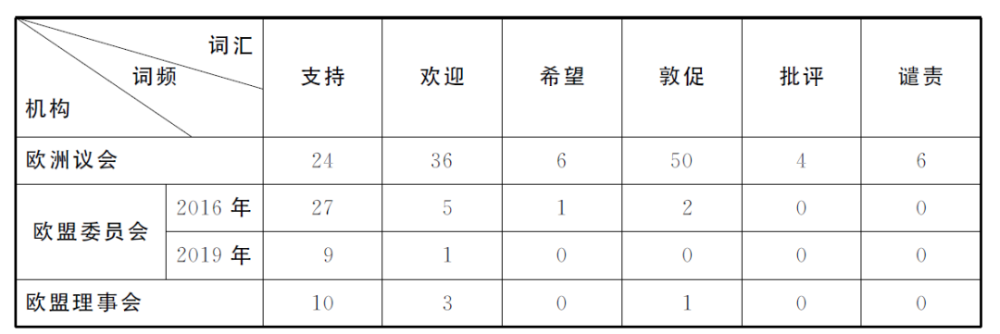
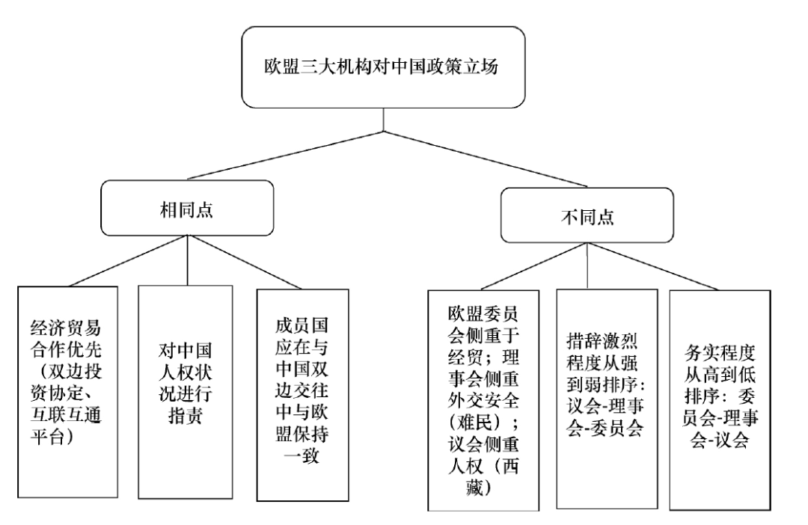
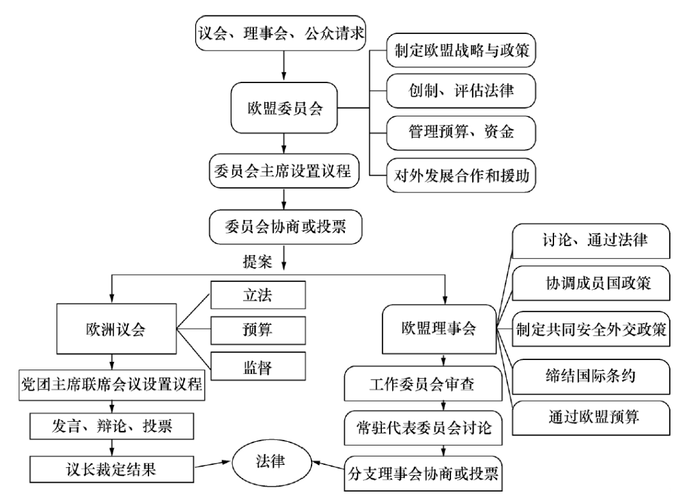

收录于合集

【作者】 刘娟平，北京大学国际关系学院博士生；张利华，清华大学社会科学学院国际关系学系教授。
【排版】 李文博
内容提要
欧洲议会、欧盟委员会和欧盟理事会对中国的政策立场既有相同性又有差异性。相同性在于，欧盟三大机构都认为中欧经贸合作是最优先的政策考虑，且都对中国人权状况表示关切并呼吁成员国在中国政策上保持一致；差异性表现在三大机构在对中国政策侧重点和务实程度方面存在不同，欧洲议会对中国人权问题多持批评态度，欧盟理事会更加关注外交安全事宜，欧盟委员会更注重与中国进行经济贸易合作；欧盟委员会对中国政策立场的务实程度最高，欧盟委员会次之，欧洲议会最低。欧盟三大机构的性质即职能、决策程序的不同是导致它们政策立场差异的主要原因。在实际决策过程中，当欧盟理事会成员国间存在分歧时，欧洲议会的立场决定着欧盟政策的最终走向。新冠疫情爆发后，欧洲议会对中国抗击疫情措施表示支持和赞赏，但部分欧盟委员会政要怀疑中国援助欧盟抗击疫情的动机。疫情对欧盟内部权力结构及其对华政策立场的冲击，将影响中欧关系的未来走向。
关键词： 地区与国别政治 中欧关系 欧盟 三大机构 对华政策 异同
本文原载于北京大学国际政治研究，2020年第4期，经作者授权发布。
正文内容
欧盟建立的初衷是为了加强欧洲一体化，成员国“用一个声音说话”。英国脱欧后，欧盟仍有27个成员国，官方语言多达24种，兼有13个下属机构和3个机构间实体。欧盟的成员国构成和组织结构十分复杂，故很难将之视为铁板一块的“欧罗巴合众国”。欧盟主要的立法、决策和执行机构对中国的政策立场虽然大体方向一致，但也时常在政策侧重点等方面出现差异。比如，2009至2019年间，欧盟发布的涉及西藏或藏族问题的文件多达212篇。其中，欧洲议会发布了124篇，欧盟委员会发布了45篇，欧盟理事会发布了19篇，可见，欧洲议会对西藏问题的关注度比其他两个机构高得多。但是，现有关于中欧关系的研究大多忽视了欧盟内部的机构间差异，将其作为一个整体去分析其对中国政策，或者只是研究欧盟某一机构对中国的立场或态度，缺乏对欧盟三大机构对同一问题的立场、态度异同的研究。
本文试图梳理欧盟三大机构对中国政策的立场之异同，分析三大机构的职能和决策程序，找出三大机构对华政策差异的主要原因。本文着重研究近些年来欧洲议会发布的关于中欧关系的决议、欧盟委员会发布的对华战略文件及欧盟理事会发布的对中国战略决议等政策文件，运用归纳法、案例法和求异法，探讨欧盟三大机构对中国的基本政策立场存在哪些异同点，三大机构的职能和决策程序之间的差异如何导致各自对中国政策立场的差异，以及这些差异对政策产生了什么样的影响。
01
欧盟三大机构对中国基本政策立场比较
对华政策文件代表着欧盟对中国、中欧关系的当前判断和下一阶段战略部署，是研究欧盟对中国政策立场变动的根本依据。欧盟理事会和欧盟委员会发布的官方文件构成对华交往的框架和基石，经由各主要党团讨论、博弈形成的欧洲议会对华决议也在欧盟内部和国际上发挥着日益重要的影响。从欧盟发布的对华政策文件来看，欧盟对华政策立场总体上历经了“蜜月期”（1995-2006年），竞争合作期（2006-2019年）以及大变局背景下的不确定期(2019年至今）。
1995年，欧盟发布首份对华政策文件——《中欧关系长期政策》，基本立场是与中国接触并促进中国全面参与国际事务。1998年，欧盟在其发布的《与中国建立全面伙伴关系》中，提出要与中国建立全面伙伴关系，并将中欧对话提升至首脑层级。2003年，欧盟发布《成熟的伙伴关系：中欧关系中的共同利益和挑战》指出,中欧合作符合双方的长远利益，希望与中国建立全面战略伙伴关系。欧盟对华立场在2006年出现转折，当年10月，欧盟发布了《欧盟—中国：更紧密的伙伴，扩大的责任》和《竞争与合作伙伴关系：欧盟—中国贸易与投资政策》。这两份文件在肯定中国重要合作伙伴地位的同时，表示中国崛起对欧盟造成了挑战，欧中既合作又竞争。《关于中国战略文件》（2007-2013）延续了2006年对中国“竞争性合作伙伴”的定位，指出中国具有发展中国家和重要国际行为体的双重性质。2013年10月，中欧双方签订了《中欧合作2020战略规划》，明确了双方的具体合作议程。在1995-2006年间，欧盟将中国视为需要帮助的发展中国家合作伙伴，这一时期是双方的“蜜月期”。随着中国日渐崛起，2006年后，欧盟将中国定位为“竞争性合作伙伴”，采取既合作又竞争的立场。随着中欧实力对比的天平继续向中国倾斜，欧盟对华政策立场又发生了新的变化。
当前，欧盟对中国政策的基础文件是欧盟委员会和欧盟外交与安全政策高级代表于2016年6月联合发布的《欧盟对中国战略新要素》（Elements for a new EU Strategy on China）及欧盟理事会于同年7月发布的《欧盟对中国战略的决议》（Council Conclusions EU Strategy on China）。《欧盟对中国战略新要素》在引言中指出，该文件参考了欧洲议会于2015年12月发布的关于中欧关系的决议。上述三份政策文件构成了欧盟对华政策的基本框架。
2019年3月12日，欧盟委员会发布了《中国—欧盟：战略前景》（EU-China-A strategic Outlook），该文件是欧盟为应对“中国对欧盟造成挑战和机遇间的平衡状态已经逐渐改变”的局势而对现有中国战略的补充。虽然“2016年对中国战略依然是与中国交往的基石”，但是，《中国—欧盟：战略前景》显然代表着欧盟委员会对中国做出的新判断和最新政策调整，因此，有必要将该文件与上述三份基本文件一起进行比较，以考察欧盟委员会乃至欧盟对中国政策的新趋向。
**
**
（一）欧盟三大机构对中国基本政策文件内容分析
《欧洲议会关于中欧关系的决议》发布于2015年12月，共形成65条决议，全文可分为三部分：援引条款、背景介绍和正式决议。援引条款部分首先值得注意的是第九条，因为该援引项与前后内容不连贯且其正式程度也不匹配：前八条及第10-14条都在引述中欧合作关系建立过程中的重要文件，但此条引述了时任欧盟理事会主席唐纳德·图斯克（Donald Tusk）在2015年中欧峰会媒体发布会上的一段讲话，主要内容是对中国人权状况尤其是藏族、维吾尔族等少数民族权利的关切。在背景介绍部分，A-F项概述了中国在投资贸易领域对欧盟的重要性及在全球治理和消除贫困等领域取得的成就；J项肯定了中国在应对全球气候变化上的努力；V项指出，中国与巴西、阿根廷等南美洲各国的信贷、贸易往来。除此之外，背景部分其余22项分别指责中国在政治改革、环境治理、法治建设、人权保护、外交政策等各方面存在的问题。正式决议部分中有33条是针对中国内政的决议，只有第21条肯定了中国在消除贫困方面为世界做出的巨大贡献。在前22条总体性决议中，第1-10条决议凸显了中欧在投资贸易协定谈判、围绕“一带一路”展开合作等经贸问题的优先性；第11-13条呼吁中欧进行人权对话；第14、15条指出要加强双方人文交流；第16-20条则指责了中国在国际投资、贸易中存在的问题；第22条呼吁中欧合作应对全球气候变化。
根据词频统计，本文将该决议案中倾向性词汇的词频制成了立场倾向量表，前三个词汇单独出现频次较高表明对华立场相对积极，反之则立场相对消极（参见下表）。虽然该决议案中积极倾向的词汇如“欢迎”（welcome）和“支持”（support）出现频次较高，但“敦促”（urge）一词出现频率最高，并且“批评”（criticize）和“谴责”（condemn）等词也反复出现。指责中国人权的决议有24条之多，占决议内容的36.9%。该文件的激烈措辞表明了欧洲议会对中国的立场和态度相对强硬。
表 欧盟三大机构对中国基本政策文件倾向性词汇词频统计

资料来源：笔者根据《欧盟对中国战略新要素》《欧盟对中国战略的决议》《欧洲议会关于中欧关系的决议》《中国：欧盟：战略前景》等文件整理而成
2016年，欧盟委员会发布的《欧盟对中国战略新要素》分为引言、原则、繁荣与改革、外交与安全合作、全球治理和多边合作、更加一致的中国政策和当下计划等七个部分，分别就中欧在经济贸易、外交安全政策和全球治理等方面的合作构建了欧盟对中国政策的总体框架。
在经贸部分，该文件指出，欧盟应当支持中国在经济、环境和社会等方面的改革，平衡、深化双方关系的当务之急是缔结双边投资协定，并指出中国应该通过去产能、降低市场准入和减少安全审查等措施改善欧盟在华企业的投资环境。文件的另一主要关注点是中欧互联互通平台，认为要以该平台为载体实现双方贸易、投资和人文交流的畅通，围绕“一带一路”的合作必须以开放共赢为基础。在外交安全政策部分，文件的基本原则是“中国在全球治理和国际关系中发挥更大作用的程度必须与其遵守国际规则、标准的程度相一致”。欧盟委员会还希望中国能为阿富汗、叙利亚等国家提供全球安全公共物品，并指出双方应该加强在彼此周边地区的安全存在。提出欧盟将与中国在裁军、核不扩散、反恐和网络安全等方面加强合作。在全球治理方面，文件指出，双方应该就“二十国集团”（G20）的优先级问题搭建合作平台；中国应该在世界贸易组织（WTO）中发挥更加积极的作用，并发布政府采购协议；欧盟应该加强与中国在自然灾害管理、人道主义危机和移民等方面的合作。同时，文件呼吁成员国在对中国关系中遵循欧盟立场并维护欧盟整体利益。
通过对《欧盟对中国战略新要素》进行的词频统计显示，该文件使用带有明显倾向性词汇的频率要低于欧洲议会的《关于中欧关系的决议》，并且绝大部分是“支持”“欢迎”“希望”等积极用语，没有“批评”和“谴责”等强烈措辞。（参见上表）该文件有两个突出特点：第一，具体政策领域的合作事宜相对细化、具体化。比如，在朝鲜问题上，文件提出欧盟应该鼓励中国认可朝鲜签订《全面禁止核试验条约》等一系列核不扩散国际条约；第二，模糊化处理对中国内政外交政策的评价。比如，在中国人权状况议题上含蓄地写道：“中国政府对国内不满情绪的威权式处理妨害了法治建设事业的努力和个人权利基础。”
2019年，欧盟委员会发布《中国—欧盟：战略前景》，该文件在双方实力对比转变基础上对中国战略政策做出一定调整。相较于2016年对中国战略文件，该文件表达了欧盟追求双方经贸关系再平衡的诉求，以及对中国的经济实力不断增长和积极追求全球影响力的担忧。
文件共列出10项政策要点：（1）欧盟将在履行联合国三大支柱议题即人权、和平安全和发展等方面与中国加强合作；（2）为更有效应对气候变化，呼吁中国在2030年对其碳排放量进行封顶，从而与《巴黎协定》的目标保持一致；（3）欧盟将加强与中国在安全领域的沟通，就“全面联合对伊朗行动计划”达成积极合作；（4）为维护伙伴国家的稳定、经济可持续发展和善治，欧盟将大力应用现有双边关系和金融机制，就其欧亚互联互通战略（Strategy on Connecting Europe and Asia ）的实施与中国展开合作；（5）为实现更加平衡互惠的经济关系，欧盟呼吁中国尽快兑现承诺，尤其在国家补贴和强制技术转移等方面加快进展，在2020年前完成投资协定谈判；（6）为在中国获得更加互惠和公开的政府采购机会，欧洲议会和理事会应在2019年年底前通过《国际采购协约》；（7）为确保劳工、环境标准被合作伙伴采纳，欧盟委员会将在2019年年中发布外国竞标者及其商品参与欧盟政府采购指南；（8）为指出外国国有资产在欧盟内部市场融资所造成的市场扭曲效应，将在年末前完善外资审查相关法律；（9）为预防网络基础设施的潜在安全隐患，将通过欧盟共同的5G网络运行办法的立法建议；（10）为验查外国投资对欧盟重要资产、科学技术和基础设施等造成的潜在威胁，成员国应当迅速、全面、高效地执行对外国直接投资进行检查的相关规定。
该文件主要有三方面的变化：第一，更加强调中欧经贸关系的平衡；第二，将应对气候变化和伊朗问题等全球治理议题放在最优先位置；第三，更加担忧中国对欧盟的企业竞争环境、金融市场、网络安全以及直接投资等方面具有的威胁。通过对该文件内容进行词频分析可以看出，虽然其措辞整体积极，但与欧盟委员会之前的战略文件相比，其积极程度略有降低。2016年，欧盟理事会发布的《欧盟对中国战略决议》内容最简洁，在第一条中即明确表示该决议与《欧盟对中国战略新要素》共同构成欧盟对华政策的框架。决议一共23条，其结构基本与《欧盟对中国战略新要素》类似，核心是中欧双方在外交安全和经济贸易两大方面的合作框架。该决议的基本特征是对各方面的政策做出了原则性规定，主要侧重于外交安全等政治合作领域，其中，有九条与中欧进行外交安全合作有关。第13条指出，中欧应在提供全球安全公共物品方面拓宽加深合作。第14条指出，双方应该就周边安全进行合作。第15条规定，欧盟对中国政策的制定应当从欧盟在亚太地区的盟友关系和利益全方位出发。第16条是所有决议中内容最多、最具体的一条，主要表达了欧盟在领土争端中不选边站的立场，但指出处理海洋争端应当在《联合国海洋法公约》框架内解决，并重申对中国和东盟尽快就“南海行为准则”达成一致的支持。第17条表达了欧盟及其成员国在裁军、核不扩散、反恐、移民，以及网络安全等领域与中国进行合作的意愿，但也特别强调对中国武器禁运方面的立场保持不变。第18条则阐述了欧盟对于加强双方在安全防务方面尤其是在打击海盗方面扩大合作的设想。第19条至21条则表达了对于中国在应对全球气候变化、可持续发展、全球经济治理及难民移民问题等方面发挥更大作用，并与欧盟及其成员国加强合作的欢迎态度。第22条则再次重申了应该在对中国事务上加强欧盟内部的一致性。
通过对欧盟理事会关于《欧盟对中国战略的决议》文本进行分析后可以发现，（参见上表）其措辞在整体上要比欧洲议会对中国的决议柔和积极。但从内容分析中可以看出，该文件在人权、南海问题及武器禁运等问题上对中国的立场偏向于指责和反对，故而，该文件对华整体立场倾向不像欧盟委员会那么积极务实。
（二）欧盟三大机构对中国基本政策立场的异同
欧盟三大机构在对华基本政策立场上有一定的相同性，例如，都赞同完成双边全面投资协定谈判，建设中欧互联互通平台，把经贸合作事宜作为最高优先级考虑，对中国人权状况表示关切，并要求成员国在与中国开展双边合作时与欧盟保持一致等。但是，欧盟三大机构在对华政策优先级排序及侧重点、措辞激烈程度及与中国务实程度等方面存在一定的差异。（参见图1）
首先，欧盟三大机构在对中国政策的优先级排序和侧重点上存在差异。虽然三大机构都一致认为，完成中欧双边全面投资协定谈判和建设中欧互联互通平台等经贸合作在中欧双边关系中占有首要地位，但从具体的决议中可以看出其各自对于政策优先级排序和侧重点不同。
欧洲议会明显地更加关注中国的人权状况，其关于中欧关系的决议中共有110处提及“西藏/藏族”（Tibet）或者“藏族/西藏的”（Tibetan），不但在决议中花大量笔墨渲染中国人权状况的“糟糕程度”，而且单列人权部分，置于与中国内政、外交并列的位置，并颁布“批评”“谴责”中国人权问题的决议。
欧盟委员会和欧盟理事会虽然在其文件中都表达了对中国人权议题的关切，但优先级却没有那么高。欧盟委员会显然将促进中欧经贸合作放在最重要的位置，宣称：“欧盟致力于在和中国的贸易投资关系的各个层面都保证互惠互利，并营造一个公平的竞争环境”，并就加深双方经贸合作关系提出展望：“在时机成熟即中国完成必要的经济改革后建立中欧自由贸易区”。欧盟委员会还提出更加详细的合作项目，比如，在关于科研创新合作方面，明确提出双方应在5G通信和物联网等技术领域进行联合研发。对欧盟理事会来说，外交安全合作显然更具优先性，其政策文件的22条决议中有九条主题是外交安全合作方面的，比例高达40.9%。欧盟理事会显然对中国在南海仲裁案中的表现很不满，在决议中用大量篇幅呼吁中国遵守《联合国海洋法公约》并运用争端解决机制处理领土、领海问题；不过，欧盟理事会更关心的是难民问题，有五条决议均提到在解决难民移民问题中加强合作，发挥中国的影响力。虽然根据最近局势的变化，欧盟委员会在最新文件中将气候变化、地区安全等政策的优先级调高了，但值得注意的有以下两点：首先，在其提出的10条行动中第4-10条都与中欧经济关系有关，故而其侧重点仍然是经贸领域；其次，在后七条涉及中欧经贸合作的行动中，提出了具体的合作事宜甚至时间表，而在针对伊朗问题进行安全合作的行动中却并没有提出详细计划。
在文件措辞的激烈程度方面，按照从强到弱的顺序对欧盟三大机构的文件内容进行排序是：欧洲议会——欧盟理事会——欧盟委员会。从上表可以看出，只有欧洲议会运用了批评和谴责等语气较为激烈的言辞，而欧盟委员会和欧盟理事会则更倾向于使用支持和欢迎等较为积极的词汇。虽然欧盟委员会和欧盟理事会在都在措辞上较为谨慎柔和，但从上述内容分析中可以看出，与欧盟委员会对中国内政外交政策上采取回避的态度相比，欧洲理事会还是在南海问题、武器禁运问题上对中国表示了不满。所以，根据言辞激烈程度，可以推想三大机构对与中国合作的期望程度符合上述顺序，结合三大机构对华政策领域的侧重点，可以看出，欧盟三大机构对中国政策立场的务实程度从高到低排序应该是：欧盟委员会——欧盟理事会——欧洲议会。
欧盟委员会文件的侧重点在于促进中欧经贸合作，在对中国当前面临的内外局势评价时相对中立，对中国的内政外交政策采取不予评论的态度，政策务实程度最高；欧盟理事会的侧重点在于外交安全等政治合作领域，尤其关注与欧盟自身利益高度契合的难民问题，但理事会依然在文件中在南海问题上对中国进行指责并强调了对中国武器禁运的立场，故而其对中国政策的务实程度次之；欧洲议会在关于中国问题的决议中充斥了大量对中国人权问题的不实描述，并对西藏等中国国家统一的根本利益问题进行刻意扭曲渲染，罔顾这有可能阻碍双方合作的风险，其政策立场务实程度最低。
如上所述，欧盟三大机构对中国基本政策文件在政策优先级排序和侧重点、措辞激烈程度及务实程度上都存在较大差异。其中，欧盟委员会侧重与中国进行经贸合作，为避免影响双方关系，文件措辞积极谨慎，务实程度最高；欧盟理事会侧重外交安全方面的合作，在少数问题方面表达对中国的不满，务实程度仅次于欧盟委员会；欧洲议会热衷于对中国的人权状况进行扭曲事实的指责和渲染，其措辞最为激烈，务实程度也最低。（参见图1）

图1 欧盟三大机构对中国政策立场异同比较图
02
欧盟三大机构对中国政策立场差异的原因
根据最相似系统设计（MSSD）即求异法，欧盟委员会、欧盟理事会和欧洲议会在决策对象、信息来源等方面都高度一致。欧盟三大机构的性质、职能和决策程序的不同导致了它们对中国政策立场的差异，其中，最主要的差异就是机构性质的不同而代表的利益主体不同，具体表现在各自的职能和决策程序的不同。所以，本文着重从欧盟三大机构的职能和决策程序等方面对其各自不同的政策立场进行分析。
（一）欧盟三大机构职能与决策程序
欧洲议会、欧盟委员会和欧盟理事会三大机构的政策立场差异是与其各自职能和决策程序密切相关。
1.欧洲议会的职能与决策程序。
欧洲议会作为三大机构中唯一的民选机构，拥有立法权、预算权和监督权。根据《里斯本条约》，欧盟立法程序主要分为两种：一般立法程序（ordinary legislative procedure）和特殊立法程序（special legislative procedure），在前一种立法程序中，欧洲议会“在广泛的领域中被给予了和欧盟理事会一样的权重，……大多数的欧盟法律是由欧洲议会和欧盟理事会共同制定的”。在特殊立法程序中，欧洲议会只充当顾问角色，但根据条约规定：在制定关于税收等特定事务的法律时，对欧洲议会的咨询是法案获得法律效力所必须的程序，故而，在这个意义上来说，特殊立法程序也不意味着欧盟理事会单独立法或决策。同时，欧洲议会也拥有一定程度上的立法动议权（legislative initiative）——可要求欧盟委员会递交立法申请：欧盟委员会在制定年度工作计划时，应充分听取议会的意见；在欧洲议会大多数议员的要求下，欧盟委员会有义务向其提交任何适当的立法动议；欧洲议会议员也能以个人名义发起动议。此外，在党团主席联席会议（conference of presidents）授权下，欧洲议会中的委员会也可就特定问题向议会提交报告从而发起动议。
欧洲议会和欧盟理事会对欧盟年度预算计划拥有共同决定权。每年6月1日前，所有欧盟机构向欧盟委员会递交各自的预算草案，后者制定年度预算草案并在9月1日前提交给议会和理事会，若预算草案被议会否决，委员会须重新制定，若被理事会否决，议会依然可选择采纳预算计划。从预算制定程序中可以看出，欧洲议会对年度预算制定具有审核、修正、批准的权力，其权重甚至超过欧盟理事会。在预算计划执行过程中，欧洲议会也具有监督、质询，以及在预算计划具体执行过程中对欧盟委员会提出建议等权力。欧洲议会对欧盟委员会具有批准和解散的权力。自1994年以来，欧盟委员会进行委员提名必须在议会举行听证会，《里斯本条约》规定：委员会主席人选由各成员国首脑提名，但最终由议会选举产生；议会有权通过不信任案强制委员会主席辞职；委员会须就其活动和预算实施情况向议会递交年度报告；委员会每年都要在议会全席大会上作欧盟年度工作报告；议会有权请求委员会进行政策创制；委员会必须回答欧洲议会议员的书面或口头质询。此外，欧洲议会对欧洲法院、欧洲中央银行等欧盟机构都具有监督、质询等权力。
大多数欧洲议会的议员属于某个议会党团，但也有无党团的议员，这些党团的党魁组成党团主席联席会议，负责制定欧洲议会全席大会的议程，而各个委员会的主席有权对此提出建议并制定议程草案。在一项欧洲议会报告进入投票程序前，一般会有委员会、政治团体的代表和欧洲议会议员就其主题进行简短的发言并进行辩论，在发言时间的分配上：首段发言时间平均分配，随后的辩论过程中按照团体成员数量分配，发言顺序也按发言人所属党团的人数进行排列，但相关委员会的报告起草人和被征询意见的委员会报告起草人具有优先发言权。投票一般在中午举行，在投票过程中议员可对表决的报告或决议递交修正案，首先表决修正案最后对修正后的全文进行表决。通常议员们采用举手表决的方式，由议长决定多数票，当难以决断时也可采用电子投票，在投票日12小时前有40人以上要求唱票则表决时应唱票。表决采取绝对多数制，当议员人数达到全体至少1/3时表决结果有效，否则,议长可在至少40名议员的要求下宣布未达到法定最少投票人数，将表决延迟到下一次会议上。
2.欧盟委员会的职能与决策程序。
欧盟委员会主要在关于欧盟的战略与政策、法律、资金预算，以及国际关系等方面发挥作用。在战略与政策方面，欧盟委员会在战略与政策的创制、实施、汇报和评估等过程中均承担着重要职责：在确定战略优先性方面，履新的欧盟委员会主席会在其任期之初决定其任期内（五年）的政治优先事项，从而为欧盟发展提供整体战略和政治方向。根据优先性议程，欧盟委员会再将其具体化为年度工作计划。在政策的创制和执行过程中，欧盟委员会主要负责向欧洲议会和欧盟理事会提出立法动议案，督促成员国实施欧盟法律，管理欧盟预算并分配资金，确保欧盟法律与欧洲法院一致，和欧盟对外行动署共同代表欧盟参加外交活动。欧盟委员会对其工作的年度报告被称为战略计划和规划周期，会定期公开发表。欧盟委员会也会对欧盟工作的效力、效率、关联性和连续性进行持续评估以检验其是否符合欧盟民众和产业发展的需求。
欧盟立法过程中，欧盟委员会拥有政策法律创制权（right of initiative），其主要职能是计划、准备并提请新的政策法律，经欧洲议会和欧盟理事会批准后正式具备法律效力。除自主创制外，欧盟委员会也会在欧洲理事会、欧盟理事会、欧洲议会和欧盟民众的请求下进行法律提案。法律通过后，欧盟委员会或欧洲议会可授权欧盟委员会通过两种非立法性法案，即执行法案和委托法案，前者确保法律在执行过程中运用得当，后者则根据具体事务的变化发展而对法案内容进行更新。欧盟委员会也具有监督法律实施的职能，如果成员国没能按时将新法律纳入本国法律或不合理地运用欧盟法律，欧盟委员会有权对其采取行动；如果成员国没能成功实施欧盟法律，欧盟委员会可对其提起正式诉讼。通过对特定法律的定期评估和对数个相关法案的适当性检查（fitness check），欧盟委员会决定是否对其法律和政策行动进行调整和更新。欧盟委员会同时也肩负着制定、实施和管理欧盟资金预算的职责。在对外交往和国际关系中，欧盟委员会主要在进行发展合作和援助方面发挥作用。欧盟委员会与联合国、经合组织（OECD）、“七国集团”（G7）及“二十国集团”（G20）等国际组织进行合作，制定欧盟发展政策和对外援助计划。同时，欧盟委员会也通过向各国派驻代表团和设立办事处的方式同各国保持联系。
欧盟委员会对欧洲议会负责，其主席人选由各国首脑推荐但须经议会绝对多数投票批准，故而，欧盟委员会主席一般是欧洲议会中最大党团的成员，副主席和委员人选由当选主席提名并经欧洲理事会首脑会议通过后，再由欧洲议会分别进行表决，27位代表人选确定后议会再就全体欧盟委员会进行表决。委员会采取集体决策机制，他们就欧盟委员会的战略、政策及法律在每周会议上进行口头或书面程序决策，当然，也会进行投票表决，采取绝对多数制，也就是说至少有15名委员投赞成票，决策才得以通过，但每周会议议程由欧盟委员会主席决定。
3.欧盟理事会的职能与决策程序。
欧盟理事会主要的职能在于讨论和通过欧盟法律、协调成员国政策、制定共同的外交安全政策、缔结国际条约，以及通过欧盟预算等。在协调成员国政策方面，首先，欧盟理事会的任务是协调成员国经济财政政策以加强欧盟经济治理能力，监督其预算政策以巩固欧盟的财政框架，并处理在欧元、金融市场及资本流通等方面的法律、实践问题；其次，理事会需要通过针对教育、文化、青年和体育等领域的合作框架，并在其中为成员国和欧盟委员会的合作设定优先项；最后，根据每年的就业形势，理事会需要对各成员国的就业政策做出指导方针和推荐。在制定和执行欧盟共同外交安全政策、发展和人道主义援助、防务及贸易等方面，欧盟理事会的行动基础是欧洲理事会制定的基本指导方针。理事会和欧盟外交与安全政策高级代表共同承担使欧盟对外行动统一、一致和高效的责任。在缔结国际条约方面，欧盟理事会一般会授权欧盟委员会和非欧盟国家及国际组织进行缔约谈判。谈判结束后，理事会在委员会提案的基础上，决定是否签署条约并形成决议，在议会以及成员国同意的前提下理事会对协定具有最终决定权。
欧盟理事会由成员国政府的各部部长组成，是欧盟“实质上的决策者”，除在适用一般立法程序的广泛领域中与欧洲议会共享立法权外，还在特殊立法程序中通过同意或协商一致等机制进行立法和决策。理事会内部有150个工作委员会为各个分管理事会进行服务，欧盟委员会的提案由理事会和议会同时审核。提案在理事会中一般须经过工作委员会——常驻代表委员会（Coreper）——分管理事会（Council configuration）等机构之手。工作委员会对法案进行全面逐条审查，审查时间不受限制，也不必然会达成一致，最终意见须提交给常驻代表委员会。经过常驻委员会讨论达成一致的提案会被列入理事会的A类条款中，大约2/3的提案会被纳入A类，一般此类提案无需再讨论，但如果有一个及以上的成员国提出要求，则仍需进行讨论。被列入B类条款的提案一般是前届理事会会议遗留下来或以上两个层级都没有达成一致或具有政治敏感性无法在低级层次解决的提案。进入投票程序后，所有投票结果和对提案的附注都会公布，理事会下的10个分管理事会都有权力通过其他分管理事会权限内的提案。
通过上述考察可知，欧洲议会主要的职能是立法、财政预算和监督，决策程序是欧盟委员会或者议会委员会提案——党团主席联席会议设定议程——议长主持全席会议——发言讨论——投票——议长裁定结果；欧盟委员会的主要职能是制定欧盟战略与政策、创制及评估法律、管理欧盟预算和资金、对外进行发展合作和援助，其决策程序是：欧盟委员会自主或经公民、欧洲议会、欧盟理事会请求创制政策或法律——欧盟委员会主席进行议程设置——委员会集体口头或书面进行协商一致或进行表决；欧盟理事会的职能主要是讨论和通过欧盟法律、协调成员国政策、制定共同的外交安全政策、缔结国际条约以及通过欧盟预算，其决策程序是：欧盟委员会提案——工作委员会进行审查——常驻代表委员会进行审查——分管理事会协商一致或投票表决。（参见图2）

图2 欧盟三大机构主要职能和决策程序图
**
**
（二）职能差异与政策立场差异的关系
根据上文的总结，不难看出，欧盟三大机构的性质、职能划分的结构基本与其对中国政策差异的结构分布相吻合。由于三大机构职能的差异，其各自的利益也不相同，基于自身利益所出现的认知偏差是导致其各自对华政策立场差异的主要原因。
欧洲议会主要的职能是和欧盟理事会通过一般立法程序或共同决策程序进行立法、通过预算并对其他机构进行质询和监督。作为欧盟唯一的民选机构，欧洲议会需要考虑选民的需求。所以，欧洲议会特别重视人权、法治和民主等方面的问题，在全席大会期间议会中各委员会一般都会就人权、民主和法治等问题提出动议并进行讨论。欧洲议会在对中国政策中尤其偏重于对人权、法治状况的考察。出于吸引选民、争取选票的需要，该机构时常就民主、法治与人权等价值观和意识形态问题进行自我标榜，对中国人权、法治等问题进行指责。其通过的政策文件中强硬及偏激的措辞都反映出了某种迎合选民的民粹主义色彩，这决定了欧洲议会在对中国政策立场上意识形态色彩较浓，经济方面的务实程度比较低。
欧盟委员会主要优先目标中第一条就是促进欧盟的就业、经济增长和投资，其十条主要优先目标中有五条关于经济发展。回顾欧盟委员会对中国政策立场，主要侧重于经济领域，尤其将中欧双边全面投资协定谈判和中欧互联互通平台建设作为当前中欧经贸合作的重点。可见，欧盟委员会的经济职能导致其最为重视中欧经济贸易合作。中国是欧盟最大的进口贸易伙伴（占欧盟自非欧盟国家进口总额的20%）和第二大贸易出口对象国（占欧盟向非欧盟国家出口总额的11%），仅次于美国（占欧盟向非欧盟出口总额的20%）。所以，从促进中欧贸易、投资合作的立场出发，欧盟委员会必然在针对中国内政外交事务方面措辞谨慎。作为欧盟战略、政策和法律的执行机构，欧盟委员会也必须对中国的内外部环境有清晰客观的认识，对双方的合作事宜进行细节性的规划和展望，因此，欧盟委员会对中国政策立场较为客观务实。
欧盟理事会和欧盟对外事务和安全政策高级代表共同制定欧盟的共同外交安全政策，确保欧盟政策的一致性、连续性和高效性是其重要职能之一，对中欧外交安全合作尤为重视。由于欧盟理事会是欧盟实质上的决策机构，所以，它对中国的政策立场一般是原则性和导向性的，不对细节计划部署做出太多规定。欧盟理事会虽然负责制定欧盟共同外交安全政策并拥有相关的决策权，但理事会一般都授权欧盟委员会与中国进行具体交往尤其是合作谈判，直到最后的签署阶段，理事会才会审查合作协议的内容并决定是否签署。相比欧盟委员会，欧盟理事会与中国政府的接触频率显然比较低，对中国政策立场要强硬一些，但理事会毕竟是政府间机构，而且主要负责欧盟对外行动，所以，在对中国政策文件中的措辞和态度比欧洲议会要缓和得多。
（三）决策程序差异与政策立场差异的关系
欧盟三大机构间的决策程序差异与其对中国政策立场差异也有紧密联系。不同机构的性质职能不同，决策程序也不相同，不同的决策程序使得三大机构在议程设置主体和决策主体方面存在明显差异，不同的议程设置与决策主体将对各自机构政策立场产生很大影响。本文中所涉及的决策程序仅指欧盟委员会、欧盟理事会和欧洲议会等机构内部提案、动议、决议、预算以及法律形成的过程，欧盟峰会及总体决策程序不属于本文研究范畴。
欧洲议会在创制、审核、批准法律及预算草案方面具有很大的主动性，尤其是在政策创制阶段，议会既可要求欧盟委员会提出议案也可通过议会下属委员会提出议案，全席会议的议程设置权又在党团主席联席会议的手中，这就意味着欧洲议会除了具备对中国人权问题进行提案的权力外，其各个议会党团为吸引选票也会将此类提案置入议会全席会议的优先议程中。而在最后的投票表决中，拥有投票权的也是分属于各大党团的议员。考虑到选举利益，大多数议员倾向于将票投给能够符合选民喜好的指责中国人权、法治问题的提案。
欧盟委员会在每周会议上讨论的政策、法律及预算提案的议程均由其主席设置，作为追求效率的政策执行机构，虽然欧盟委员会采取集体决策机制，但欧盟委员会主席被赋予了极大的权力，除设置会议议程之外，主席拥有提名副主席和委员的权力，确定本届委员会政策方向和优先目标的权力。这就使得欧盟委员会内部在大政方针上基本没有分歧，而作为真正意义上的超国家机构，欧盟委员会负责维护、促进欧盟整体利益，以其主席为首的欧盟委员会必须对中国这个世界第二大经济体国家采取谨慎态度，并重视在各方面的合作。同时，由于考虑欧盟经济一体化程度的成熟度和优先性，使得作为执行机构的欧盟委员会必须以经济合作为优先目标，从而倾向于中欧双边经济贸易合作。欧盟委员会对中国务实的政策立场很大程度上源于其议程设置主体和决策主体对中国类似的立场，而欧盟委员会由于议程设置权和决策权的集中使得政策立场具有一定的稳定性和连贯性。
欧盟理事会是政府间机构，代表各成员国利益，其决策结果通常是各成员国内部博弈的结果。由于其政府间性质，欧盟理事会在对华政策方面更加关注欧盟的政治利益以及与中国的外交安全合作。在议程设置和决策方面，虽然在理事会主席国领导下的工作委员会对提案的审查从而对常驻代表委员会、分管理事会的讨论议程具有一定的设置权力，但由于只要至少一个成员国对已经被纳入A类的议案提出异议，议案需要被重新讨论，因此，理事会中的议程设置权力掌握在各成员国手中。由于目前欧盟各成员国被难民等问题所困扰，理事会对就该问题与中国进行合作的提案更加容易被讨论和通过。而由于欧盟成员国基本都是美国的盟友和北约成员，出于地缘政治和盟友立场的因素，理事会在南海裁决案和对中国武器禁运等问题上对中国的态度较为强硬。总之，欧盟理事会的议程设置、决策主体都是各国政府，对中国的政策立场有时是内部分裂甚至自相矛盾的。
03
案例分析
为验证本文对欧洲议会、欧盟委员会和欧盟理事会对中国政策立场差异的原因分析，本文选取了中国市场经济地位问题作为案例来探究在具体决策过程中三大机构存在的立场差异及其原因和影响。
根据《中国加入世贸组织议定书》第15条（a）项（ii）目规定：“如受调查的生产者不能明确证明生产该同类产品的产业在制造、生产和销售该产品方面具备市场经济条件，则该世界贸易组织（WTO）进口成员可使用不依据与中国国内价格或成本进行严格比较的方法。”即其成员在针对中国发起的反倾销调查中可使用“替代国”的做法来计算正常价值。（d）项明确指出,“无论如何，（a）项（ii）目的规定应在中国入世15年后终止。”即从2016年12月11日起，任何世贸组织成员不得对中国在反倾销调查中使用“替代国”方法。
2015年末，欧盟委员会与法、德等欧盟大国表示准备承认中国市场经济地位，但也试图与美国保持一致。2016年2月，5000多名钢铁工人在布鲁塞尔进行集会抗议欧盟承认中国市场经济地位，同年4月11日，在柏林和杜伊斯堡也同样聚集了4.5万名工人为此进行游行示威。迫于民众的压力，欧盟委员会就是否承认中国市场经济地位进行了咨询，在欧盟委员会收到的5000多份回应中，近80%的受访者表示反对欧盟承认中国市场经济地位。欧盟委员会倾向于承认但改变计算方法，理事会内部则存在一定分歧：在第十八届中欧峰会上，时任欧盟盟委员会主席容克和欧洲理事会主席图斯克表示中国在解决钢铁产能过剩问题上的努力令人赞赏，将会认真讨论关于承认中国市场经济地位的问题。在2016年10月13日的欧盟峰会上，欧盟委员会表示打算承认中国市场经济地位，并希望成员国政府首脑准许其出台针对中国倾销产品的新贸易保护措施。德国等出口强国支持该立场，但意大利等国则呼吁拒绝承认中国市场经济地位。
欧盟委员会和欧洲议会各自的法律服务部门对《中国加入世贸组织议定书》的法律评估也存在分歧：欧盟委员会认为应按照议定书如期承认中国法律地位，而欧洲议会法律服务部门则认为，“第15节并未规定欧盟在 2016 年 12 月 11 日之后必须给予中国市场经济地位，或者也没有清楚地表明2016年12月11日之后必须使用何种方法确定正常价值”。2016年5月12日，在欧洲议会发布的关于中国市场经济地位的决议中，第二条明确表示，“中国不是市场经济国家，至今没有达到欧盟制定的关于市场经济的五条标准”。最后，按照欧洲议会相关决议，2017年11月9日，欧盟委员会发布文件《对中华人民共和国反倾销计算的可能变化（包括其他非市场经济体）》，向欧洲议会和欧盟理事会提议取消“非市场经济体名单”，而采用“市场扭曲”的标准对中国等非市场经济国家进行反倾销计算，一方面，避开了《中国加入世贸组织议定书》中第15条（d）款关于到期废除非市场经济条款的规定；另一方面，这变相地延续了以第三国替代的做法。
2017年6月，在同李克强总理会晤的过程中，德国总理默克尔表示欧盟应该履行《中国加入世贸组织议定书》中第15条中规定的义务，双方都致力于找到对各国一视同仁、对中国非歧视性的解决方案。这似乎预示着欧盟在承认市场经济方面有了转机，但是，2017年11月15日，欧洲议会通过了欧盟反倾销调查新方法修正案，这意味着欧盟委员会关于“市场扭曲”在反倾销中计算真实价值的做法获得了法律基础，在符合市场扭曲标准的条件下，欧盟可选择使用第三国或国际价格替代出口国价格衡量进口产品的价值。随后，在2017年11月20日，欧盟委员会发布了首份《市场扭曲报告》，文件称中国存在政府对资源配置和价格产生决定性影响、生产要素定价和配置受国家影响明显，以及钢铁等行业存在重大扭曲等市场扭曲现象。
对于中国市场经济地位问题，欧盟委员会虽然准备运用新计算方法进行贸易保护，但同时也主张对中国市场经济地位进行法律上的承认，迫于民众和美国等“合作伙伴”的压力，最终选择了提出“市场扭曲”的概念和标准来变相地继续进行“替代国”的做法，没有履行自身对《中国加入世贸组织议定书》的义务。2016年5月，欧洲议会通过关于中国市场经济地位的重要声明基本确定了欧盟不承认中国市场经济地位的基调，在某种程度上也对欧盟委员会造成了压力。欧洲理事会和欧盟理事会并没有就此问题发布声明和决议，主要原因在于欧盟成员国就此问题没有达成一致：德国等出口大国出于自身利益考虑，认为应该承认中国的市场经济地位从而避免本国与中国的贸易关系受到消极影响；而意大利、葡萄牙等南欧国家及东欧国家出于保护本国产业的目的，认为应该拒绝承认中国市场经济地位。
在欧洲议会发布关于中国市场经济地位的决议前，欧盟委员会的态度都倾向于承认，这说明在相关问题上委员会基本持务实立场：在法律层面上承认中国市场经济地位在一定程度上能够维护双边经贸关系。但欧洲议会发布相关决议后，欧盟提出“市场扭曲”标准的概念和方法，这既体现了欧盟委员会作为执行机构在立法和决策方面的自主性有限，也意味着在欧盟成员国内部难以形成一致即欧盟理事会拿不出统一方案的情况下，欧洲议会的立场往往具有决定欧盟具体政策走向的作用。
结 论
本文从欧盟三大机构对中国基本政策文件和典型案例入手分析了它们对中国政策立场的异同。研究发现，三大机构都认为与中国进行经贸合作是欧盟的最优先考虑，也都对中国的人权状况表示关切，都呼吁成员国在对中国政策上保持一致以维护欧盟整体利益。三大机构对华政策立场差异主要表现在政策侧重点和务实程度上：欧盟委员会更侧重与中国进行经贸合作，欧盟理事会更加关注外交安全领域，而欧洲议会热衷于就中国的人权状况发表不实的指责和批评。对比之下，欧盟委员会对中国的政策立场的务实程度最高，欧盟理事会次之，欧洲议会较低。在欧盟委员会和理事会成员国难以达成一致时，欧洲议会的立场对最终政策具有决定性的影响。本文运用求异法分析发现，欧盟三大机构的性质、职能及决策程序的不同是导致其各自对中国政策立场存在差异的主要原因，并通过对中国市场经济地位问题的案例分析证实了这一研究结论。
然而，值得注意的是，自2019年12月新冠肺炎疫情爆发以来，欧盟三大机构尤其是欧洲议会对中国的政策立场发生了一定变化。2020年2月12日，欧洲议会在法国斯特拉斯堡举行全体会议，其间就新冠肺炎疫情议题进行辩论。欧盟委员会平等委员海伦娜·达利（Helena Dalli）在演讲中指出，新冠肺炎疫情是欧盟当前面临的重大挑战，欧盟对中国采取的防控措施表示赞赏，抗击疫情不是中国一国的事情，而是全世界面临的挑战，欧盟应与中国加强合作，切实承担国际责任，对中国和亚洲人的歧视与欧盟法律相悖，欧盟对此持零容忍态度。欧洲议会多数议员也表示，欧盟应加强成员国之间，以及与中国的信息共享，消除虚假信息造成的社会恐慌。在灾难面前，欧盟不仅要保护好公民的安全健康，也应展现出与中国人民团结一心的姿态。欧盟理事会在2月25日发布了《对于新冠肺炎疫情的理事会决议》（Council Conclusions on COVID-19），呼吁欧盟“援助世界各地受疫情影响最严重的国家特别是中国，并与世卫组织和第三国当局合作研究可能的方式方法，为抗击疫情提供协助”。4月8日，欧盟委员会发布了《欧盟对新冠肺炎疫情的全球回应》（Communication on the Global EU Response to COVID-19）以呼吁全球团结协作抗击疫情，针对美国政客散布“中国病毒”和“武汉病毒”的行为，该文件强调，各国应提高透明度、尊重事实、反驳虚假信息，并指出“欧盟的行动将基于事实和透明，与欧盟内部和外部的任何虚假信息作斗争”。
总之，自新冠疫情发生以来，欧盟三大机构均表现出与中国合作的态度。欧盟理事会从安全角度出发，呼吁中欧加强生物安全合作；欧盟委员会从经济角度考虑，强调中欧合作抗疫并在疫情后协作实现经济复苏。欧洲议会也在疫情期间表现出支持中国的合作态度，对中国的防控措施表示赞赏。欧洲议会立场态度的变化与近些年来“欧洲议会中欧友好小组”大力开展的交流活动不无关系，这些活动增进了欧洲议会议员对中国的了解。可见，在欧洲议会内部建立对华友好组织，加强中欧议员之间和民众之间的交流十分重要。虽然在新冠疫情期间欧盟三大机构均表示了与中国合作的态度，但是，在欧盟机构内部依然有对中国质疑的声音。一些欧盟政要提出，欧洲必须发展自产防疫物资的能力，保障医护人员有足够的防护装备，必须将相关产业链重新转移回欧洲国家，不能过分依赖中国。他们对“17+1合作”疑虑不安，提出要警惕中国对欧盟“分而治之”。欧盟外交和安全政策高级代表约瑟夫·博雷尔（Josep Borrel）在讲话中表示，欧洲要意识到，中国支援欧洲抗疫的“慷慨政治”掩盖了其中的地缘政治动机，他对北京有针对性的战略感到不安，提出“需要捍卫欧洲免受其破坏者的侵害” 。在疫情期间，欧盟三大机构对中国的立场转变是否预示着我国通过援助意大利、塞尔维亚等欧盟国家，以及一系列的公共外交活动已经部分扭转了欧盟民众对我国较为负面的印象，使得欧洲议会转向相对积极合作的立场？而三大机构尤其是欧盟委员会中的政治精英对中国援助和发展合作等政策的怀疑，是否凸显了欧盟内部在中国议题乃至更广泛意义上精英和民众的分裂？是否意味着欧盟委员会出于对中国政策意图的疑虑从而转向更为保守的立场？回答以上问题需要进一步密切追踪疫情动态，观察、分析这场全球性公共卫生危机对欧盟内部权力结构的冲击，以及欧盟三大机构对中国政策立场发生的相应改变。
**
**
**
**
**
**
添加 “国小政”微信
获取最新资讯